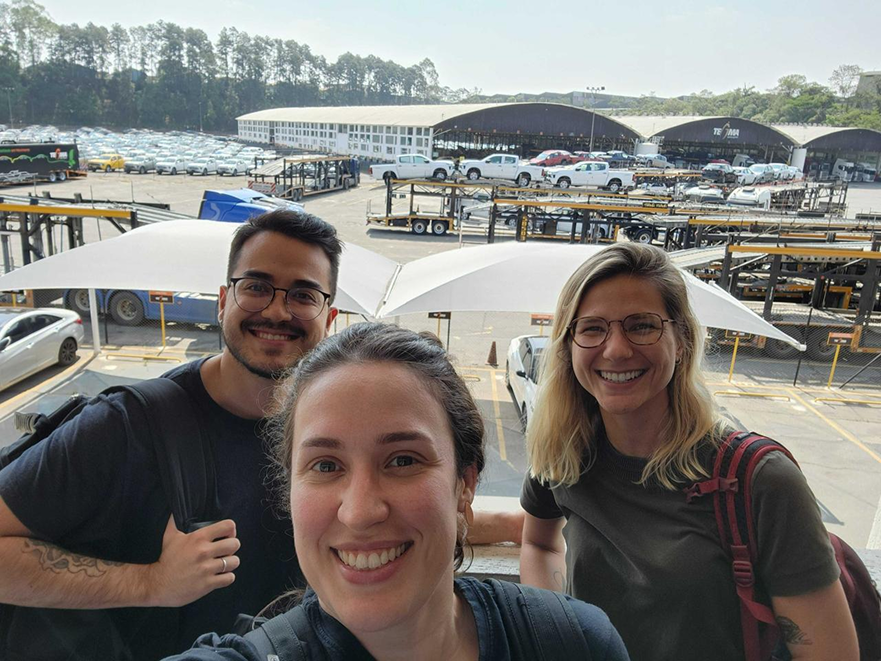
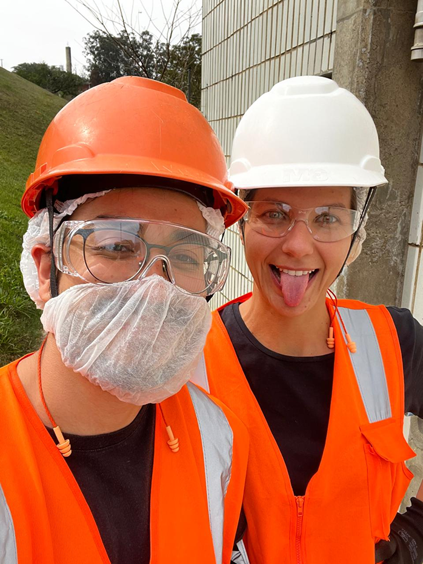
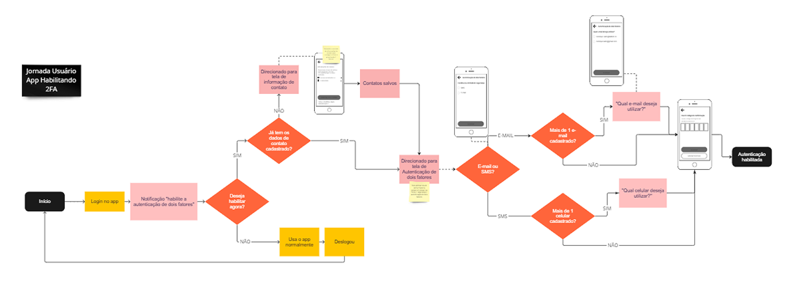
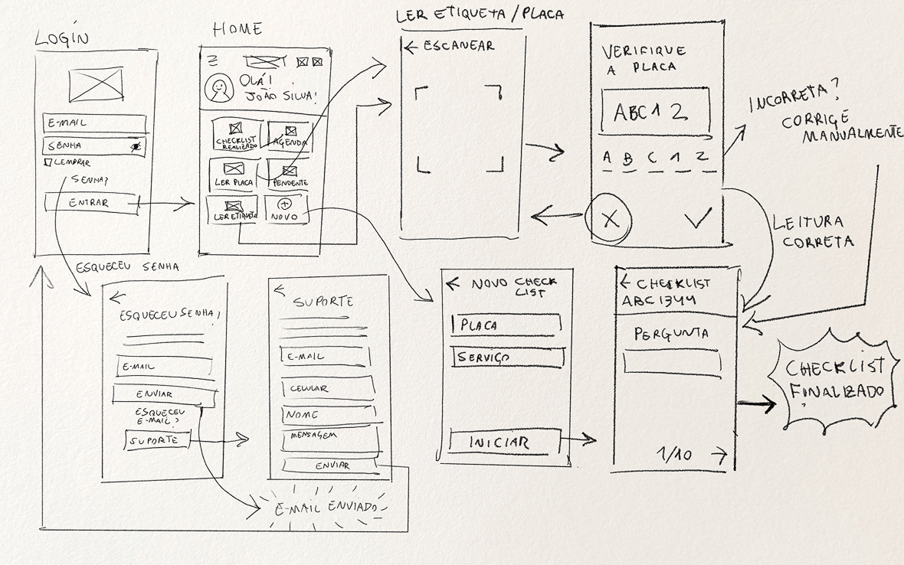
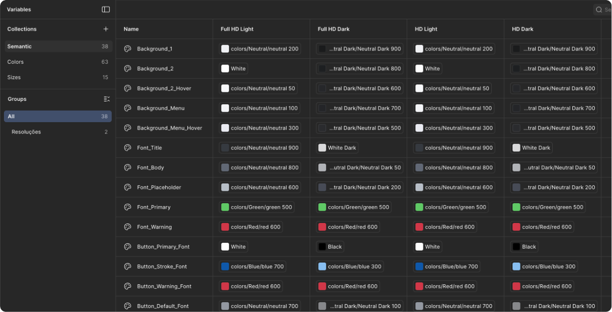
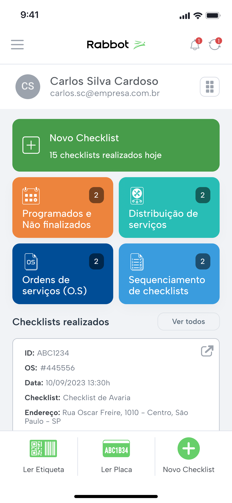
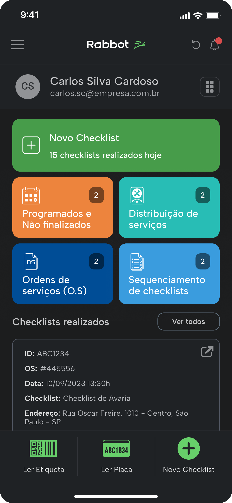
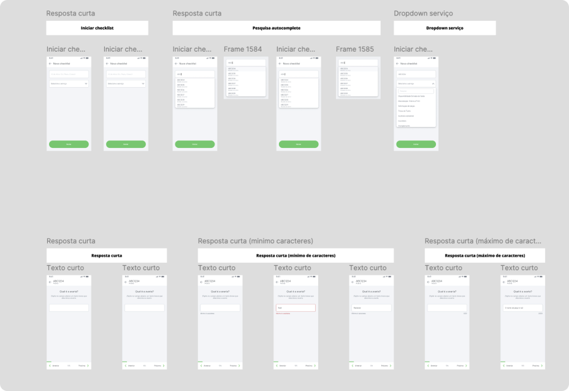
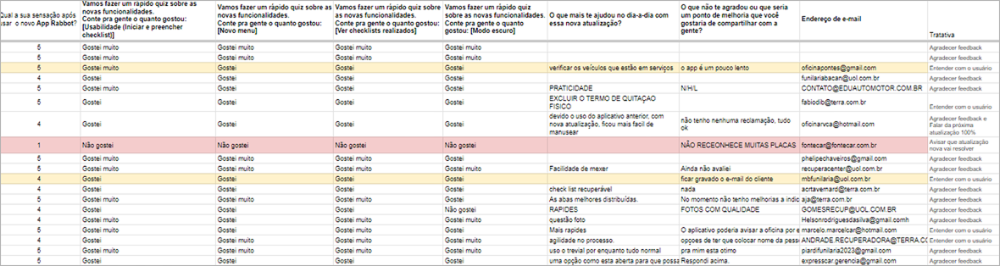
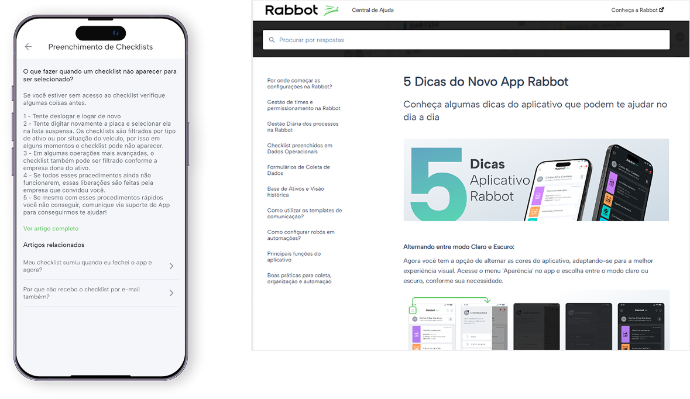

A Rabbot já tinha um app de checklists, mas ele não dava conta da complexidade real da operação. O app original usava uma grade de blocos coloridos como navegação, sem hierarquia, sem design system e sem conexão com o brandbook. Cada tela era desenhada de forma isolada. Assumi o projeto para repensar a experiência do zero: substituir processos manuais em papel por algo que fizesse sentido para quem usa no campo, integrando tudo à plataforma. Conduzi o projeto de ponta a ponta, desde as visitas com usuários reais até a prototipagem, testes de usabilidade e lançamento.
.png)
.png)
Interface anterior vs nova interface — navegação e identidade visual reformuladas
O segmento logístico ainda é muito manual. Checklists em papel, ordens de serviço impressas, gestão por planilha. Fui pessoalmente a empresas como Tegma, Porto Seguro, Bauminas e Unilever para entender como isso funcionava na prática. O que mais me importava não era só identificar dores, era mapear a jornada completa do veículo. Os principais insights de campo foram: usuários pulavam questões não por serem irrelevantes, mas porque o input era confuso ou lento; operadores perdiam progresso do checklist por quedas de conectividade, tornando o modo offline uma necessidade crítica; o brilho da tela ao sol dificultava a leitura, o que moldou a decisão de suportar dark mode e light mode com alto contraste; e gestores queriam revisar checklists preenchidos sem precisar alternar para o SaaS. Esse mapeamento foi dando clareza do que o app precisava contemplar.

Visita à Tegma

Observação em campo
Com a jornada mapeada, desenhei user flows detalhados para cada perfil de usuário. Essa etapa foi essencial para garantir que cada caminho dentro do app fosse claro e funcional antes de qualquer decisão visual.

User flow — jornada do operador no app
Sempre rascunhei no papel. Antes mesmo do boom da IA, já usava esboços em reuniões para materializar rapidamente o que estava sendo discutido, uma forma de garantir que todo mundo está falando da mesma coisa. Os primeiros wireframes foram feitos à mão, focados 100% na estrutura e no fluxo. Isso permitiu explorar e descartar ideias rápido, antes de avançar para o digital.

Wireframes em papel — estrutura antes da interface
Antes de redesenhar qualquer tela, construí o design system. Essa foi a decisão de maior alavancagem do projeto. Defini uma paleta de cores primitiva (Blue, Green, Neutral, Red, Yellow) com 10 tons cada, e sobre ela criei tokens semânticos como Background_1, Font_Title, Button_Primary e Border_Default. A camada semântica foi estruturada em quatro contextos: Full HD Light, Full HD Dark, HD Light e HD Dark, correspondendo às resoluções e modos usados em produção. Isso significou que alternar entre dark mode e light mode não exigiu nenhum redesenho, apenas uma troca de variável. Quando validamos o toggle via Figma variable modes, o app inteiro atualizou instantaneamente. O mesmo sistema de tokens serviu de base para o redesign da plataforma SaaS, unificando a identidade visual de ambos os produtos pela primeira vez.



Com a estrutura validada, parti para os protótipos de alta fidelidade. O app ganhou uma identidade visual alinhada ao brandbook da Rabbot. A navegação foi completamente reformulada: a grade de blocos coloridos deu lugar a uma bottom navigation bar persistente e um drawer lateral para navegação secundária. O botão de novo checklist ganhou destaque direto na home, refletindo que iniciar um checklist era a ação mais frequente dos operadores. Foram 22 tipos de questão diferentes para cobrir a complexidade real da operação, cada um com seu próprio componente de input, documentado para handoff com o time de desenvolvimento.
.png)
.png)
.png)
.png)
.png)
.png)
.png)
.png)
.png)
.png)
.png)
Todas as telas, variações de componentes, estados de botão, campos de input e dropdowns foram documentados em detalhe no Figma. Para gestão de tarefas, usamos o Jira. Cada card era pré-alinhado com o Tech Lead antes de entrar no board, garantindo que os desenvolvedores tivessem todas as informações necessárias para implementar sem precisar interromper o processo de design para tirar dúvidas. Trabalhei em ciclos curtos de revisão de build, ajustando specs conforme o que o Flutter conseguia entregar nativamente.

Documentação de componentes e handoff no Figma
Depois do lançamento, acompanhei de perto a recepção dos usuários. Formulários, entrevistas e pesquisas de satisfação dentro do próprio app nos ajudaram a entender o que estava funcionando e o que precisava de ajuste. Iterei com base em comportamento real, não em suposições. Estruturei também os conteúdos e guias do Helpcenter, tutoriais, guias interativos e respostas para dúvidas frequentes, tudo pensado para reduzir a dependência de suporte manual e facilitar a adoção por novos usuários. Os tickets de suporte relacionados ao app caíram de uma média de 30 por semana para menos de 10.

Feedbacks coletados após o lançamento

Helpcenter integrado ao app
Conduzi o projeto inteiro: discovery em campo, mapeamento de jornada, wireframes, design system, prototipagem, testes de usabilidade e iterações pós-lançamento. Também fui responsável pelo Helpcenter. Foi um dos projetos onde mais tive contato direto com usuários reais, e isso fez toda a diferença nas decisões que tomei.